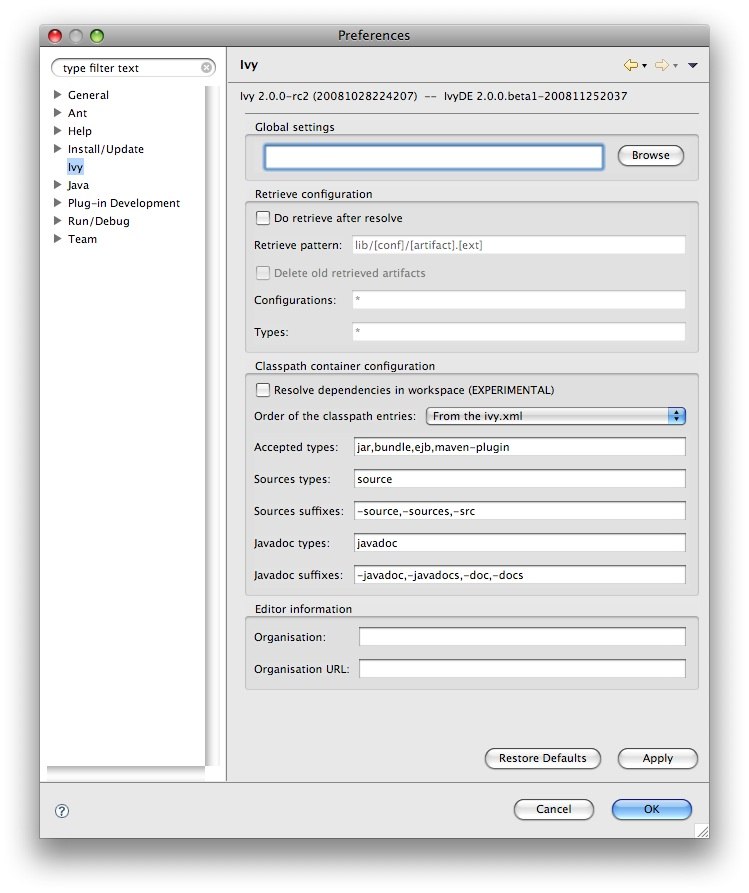

Documentation (2.0.0.beta1)
IvyDE can be considered as the merge of two tools:
- Ivy xml files Editor: creation wizard, html preview and completion for Ivy xml tag, attributes but also attributes' values.
- Class path container: Automatic downloads, access "resolve" task from your IDE
Plugin installation
Before trying to use it, let's install it!The trunk version has not been release yet, so you should install it by building it yourself.
Eclipse Preference Page
There is a global configuration page, which control the behaviour of every Ivy instance in every project. You can also configure it by project.The global configuration can be found in the global configuration panel of Eclipse (menu Window>Preferences for Windows and Linux users, Eclipse>Preferences for mac users), and select the item Ivy.

- Global settings:
- Ivy settings URL: specify here the path to your ivy settings file. Leave it blank to use Ivy default resolvers
- Retrieve configuration:
- Retrieve pattern: the pattern to use for the retrieve. Check Ivy documentation for pattern explanation.
- Delete old retrieve artifacts: on each retrieve, the previously retrieved libraries will be removed (similar to the sync argument in the ant task)
- Retrieve configurations: the configurations to retrieve (a comma separated list)
- Retrieve types: the types of artifact to retrieve (a comma separated list)
If checked, some retrieve job will be triggered after each the resolve.
- Classpath container configuration:
- Project dependencies: IvyDE can try to make dependencies between project more than to jars into a repository.
Important note: this feature is quite limited for now, it just tries to replace jar dependencies with project dependencies, based on the module id of the jar, and the projects configured to use IvyDE; the version is not taken into consideration, and even if a project match a dependency, the jar of the dependency have to be resolved from a repository. - Order alphabetically: by default in the classpath container the entries are ordered by order of declaration. When there are many entries, it could be useful to have them ordered alphabetically so that you can find them faster.
- Accepted types: a comma separated list of extensions which will make IvyDE add the artifact to the classpath
- Sources types: a comma separated list of ivy "type" which will make IvyDE consider them as sources
- Sources suffixes: a comma separated list of suffixes which will make IvyDE attach as source the artifact with the suffix to the artifact without the suffix. For instance, "commons-lang-sources.jar" will be attached as source to "commons-lang.jar" with the default value.
- Javadoc types: same as sources types but for javadocs
- Javadoc suffixes: same as sources suffixes but for javadocs
- Editor information:
- Organisation: your company name for ivy editor completion
- Organisation URL: your company web site url for ivy editor completion
Printer Friendly